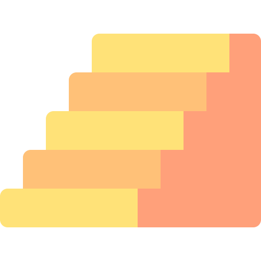
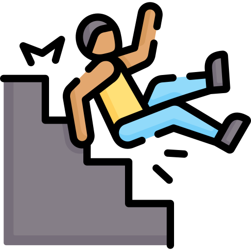

Vous comptez les marches quand vous empruntez un escalier ?
Vous détestez les escaliers avec un nombre de marches impaires ?
Alors vous êtes au bon endroit
Cette application unique a pour but d'établir un recensement des escaliers afin d'étudier la répartition du nombre de marches, leur emplacement et le nombre d'accidents associés
Vous avez trouvé un escalier ? Ou encore mieux, vous vous êtes vautrés dans un escalier car vous avez la coordination d'un bébé gnoux ? Dites le nous !

Ajouter un escalier

Reporter un accident